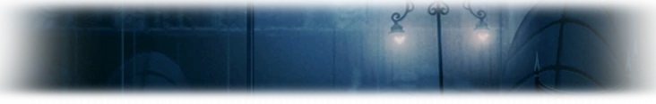
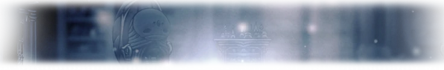
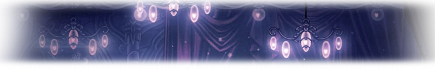
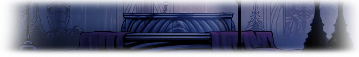
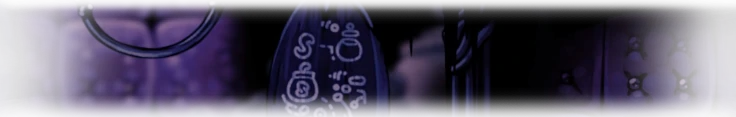
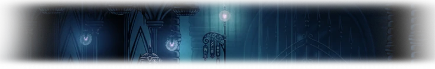

Город слёз
Город слёз — локация в игре Hollow Knight.
Описание
Быв когда-то «сердцем Халлоунеста», сейчас Город кишит оболочками трусливых жуков и стражей, в разумах которых остались лишь небольшие воспоминания о прошлой жизни[1]. Вода Голубого озера, расположенного над Городом слёз, постоянно стекает сверху, тем самым создавая в городе непрекращающийся уже долгое время дождь[2].
Главные врата столицы, выходившие на Грибные пустоши, были запечатаны во время распространения Чумы[3]; была остановлена работа лифтов, рогоходов, трамваев, что, впрочем, не помешало Чуме распространиться и здесь[4].
В Город слёз можно попасть несколькими способами: через проход в Грибных пустошах, вставив герб города в выемку статуи Хегемола; через Древний котлован, приехав туда на трамвае из Глубинного гнезда; приехать в Земли упокоения с Забытого перепутья и на лифте спуститься в локацию.
Обитатели
Интересное
- Шепчущий корень: 28 сущности
- 1 черепок сосуда
- 3 гусенички
- 1 тотем Душ
- 9 залежей гео
- 2 дневника странников
- 1 печать Халлоунеста
Подлокации
Святилище душ
Лаборатория, где учёные жуки пытались изучить и использовать силу Душ, чтобы обрести бессмертие[5] и избавиться от Чумы[6]; Мастер душ, глава Святилища, настаивал на использовании силы Душ для излечения, однако Бледный Король отверг его предложение, чего Мастер простить не смог[7].
В отличие от большинства жуков королевства, учёные Святилища пережили эпидемию, но поплатились за это разумом, полностью обезумев: надежда, что манипуляция силой Душ даст защиту от заразы, сыграла на руку Лучезарности, которая смогла подчинить жуков своей воле[8].
Прохождение Святилища необходимо для получения Опустошающего пике, открывающего проходы на неизведанные до этого территории. Также в локации находится заклинание Теневая душа, улучшающее Мстительный дух, для получения которого необходим изящный ключ.
Обитатели
| Враги | Боссы |
|---|---|
| Просчёт | Воин душ |
| Искажатель душ | Мастер душ |
| Блажь | Душегуб (босс грёз) |
Интересное
- Амулет искажатель заклинаний
- Заклинание Теневая душа (комната изящного ключа)
- Заклинание Опустошающее пике (после победы над Мастером душ)
- 1 гусеничка
- 3 тотема душ
- 1 сундук: 380
- 1 печать Халлоунеста
Дом наслаждений
Небольшая подлокация, попасть в которую можно при наличии простого ключа.
Проход в Дом наслаждений можно посмотреть здесь. В здании находится лифт, который без остановки преодолеет 5 этажей. На одном из этажей находится секретная комната, похожая на кухню или кладовую, где развешены разделанные жуки и черви из канализации. Также там обитает призрак Погги Торакс.
На верхнем этаже расположилась сцена, на которой когда-то выступала Марисса, теперь уже лишь призрак. Она с радостью споёт Рыцарю, хоть он и будет слушать её в одиночестве.
На вершине Дома находится горячий ключ и скамейка — именно здесь отдыхает Миллибель, если она сбежала от Рыцаря с украденными Гео. За скамейкой находится непрочная стена, разрушение которой ведёт к лифту, отправляющий пассажира в Земли упокоения. Исследование Дома наслаждений необязательно для прохождения игры на 100%.
Обитатели
| NPC |
|---|
| Миллибель |
| Марисса |
| Погги Торакс |
Интересное
- 1 дневник странника (1-ый этаж)
- 1 залежь Гео: 30 (2-ой этаж)
- 1 тухлое яйцо (4-ый этаж)
Шпиль Хранителя
Дом Лурьена Хранителя — одного из Грезящих, которые держат Печати в Храме Чёрного Яйца, защищая Полого рыцаря внутри. Для игрового прогресса необходимо уничтожить Лурьена. Необходимы монаршие крылья, чтобы взойти на Шпиль, однако залезть туда можно и без них, оттолкнувшись гвоздём от декоративных построек. Добраться до Лурьена — задача не из простых: его покой оберегают личные Рыцари-хранители. На лифте перед самим Грезящим есть секретная комната, где Лурьен оставил свою последнюю запись.
Башня любви
Обитель Коллекционера — создания из Пустоты, любящего заточать существ в стеклянные банки. Доступ сюда можно получить через Край королевства, если герой имеет при себе ключ любви. После переключения рубильника будет открыт проход на Вокзал Короля. Победа над Коллекционером даёт доступ к трём заточённым гусеничкам и карте Коллекционера, которая показывает на карте всех неосвобождённых гусеничек.
Обитатели
| Враги | Босс |
|---|---|
| Охотничий аспид | Коллекционер |
| Мстекрыл | |
| Бальдр |
Вокзалы рогачей
Вокзал короля
Вокзал рогачей, который практически лежит в руинах. Затопленный рогоход под рабочим Вокзалом кишит Звонокрылами, однако там можно проплыть и выйти на Край королевства.
Интересное
- 1 Печать Халлоунеста (на крыше вокзала)
Городские склады
Неприметный Вокзал в северо-западной части Города. Содержит Вокзал рогачей и лифт, ведущий непосредственно на Забытое перепутье. Сюда привозили товары со всего Халлоунеста[9], обеспечивая тем самым столицу королевства всем необходимым.
Прочее
- Заметна невооружённым глазом разница между западной и восточной частями столицы королевства: район по правую сторону от Памятника Полому рыцарю содержит богато убранные комнаты и здания, что сложно сказать о бедной западной части Города[10]. Оболочки «богатых» жуков в журнале Охотника также обозначены как «бывшие члены высшего общества Халлоунеста»[11].
- В некоторых комнатах развешены портреты жуков, в глазницах которых ещё не играет чумной огонёк, что лишний раз свидетельствует о том, что у здоровых жуков Халлоунеста были пустые глазницы без «зрачков».